Change analysis for Belgium for PRIMAP-hist v2.6.1_final compared to
v2.6_final
Overview over
emissions by sector and gas
The following figures show the aggregate national total emissions
excluding LULUCF AR6GWP100 for the country reported priority scenario.
The dotted linesshow the v2.6_final data.
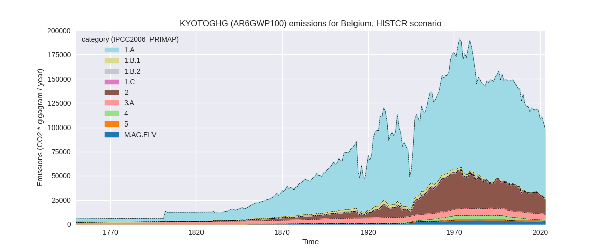
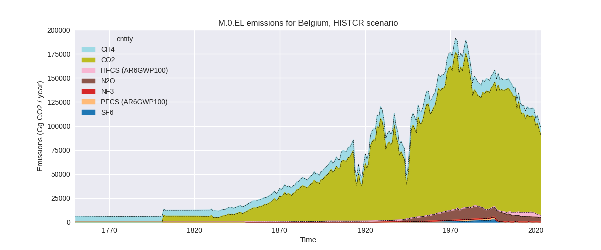
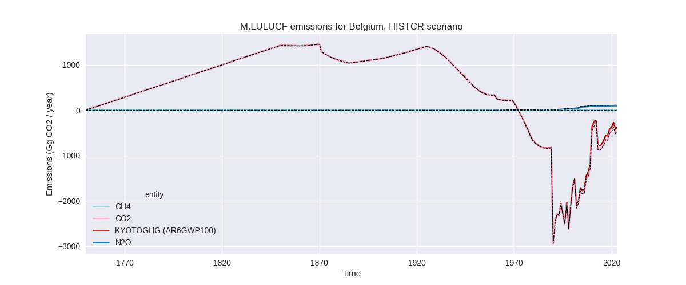
The following figures show the aggregate national total emissions
excluding LULUCF AR6GWP100 for the third party priority scenario. The
dotted linesshow the v2.6_final data.
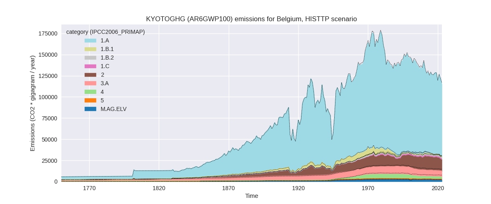
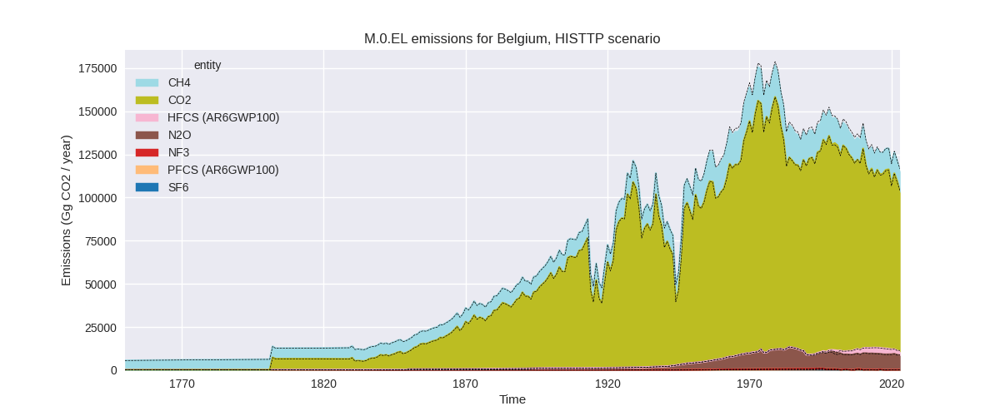
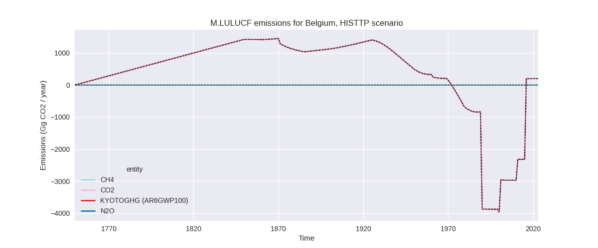
Overview over changes
In the country reported priority scenario we have the following
changes for aggregate Kyoto GHG and national total emissions excluding
LULUCF (M.0.EL):
- Emissions in 2023 have changed by -0.3%% (-299.13 Gg CO2 / year)
- Emissions in 1990-2023 have changed by 0.0%% (28.10 Gg CO2 / year)
In the third party priority scenario we have the following changes
for aggregate Kyoto GHG and national total emissions excluding LULUCF
(M.0.EL):
- Emissions in 2023 have changed by -1.4%% (-1658.91 Gg CO2 / year)
- Emissions in 1990-2023 have changed by -1.2%% (-1590.60 Gg CO2 / year)
Most
important changes per scenario and time frame
In the country reported priority scenario the
following sector-gas combinations have the highest absolute impact on
national total KyotoGHG (AR6GWP100) emissions in 2023
(top 5):
- 1: 2, CO2 with -893.92 Gg CO2 / year (-6.6%)
- 2: 2, HFCS (AR6GWP100) with 597.70 Gg CO2 / year (33.2%)
- 3: 4, CH4 with 58.30 Gg CO2 / year (7.8%)
- 4: 1.A, CH4 with -52.50 Gg CO2 / year (-8.8%)
- 5: M.AG.ELV, N2O with -52.23 Gg CO2 / year (-1.8%)
In the country reported priority scenario the
following sector-gas combinations have the highest absolute impact on
national total KyotoGHG (AR6GWP100) emissions in
1990-2023 (top 5):
- 1: 2, HFCS (AR6GWP100) with 46.20 Gg CO2 / year (1.9%)
- 2: 2, CO2 with -26.48 Gg CO2 / year (-0.1%)
- 3: 2, PFCS (AR6GWP100) with 8.14 Gg CO2 / year (1.1%)
- 4: 4, CH4 with 1.71 Gg CO2 / year (0.1%)
- 5: 1.A, CH4 with -1.54 Gg CO2 / year (-0.3%)
In the third party priority scenario the following
sector-gas combinations have the highest absolute impact on national
total KyotoGHG (AR6GWP100) emissions in 2023 (top
5):
- 1: 4, CH4 with -2483.33 Gg CO2 / year (-52.3%)
- 2: 1.B.2, CH4 with 1638.77 Gg CO2 / year (219.9%)
- 3: 2, CO2 with -534.15 Gg CO2 / year (-6.9%)
- 4: 2, N2O with -456.91 Gg CO2 / year (-9.4%)
- 5: 2, HFCS (AR6GWP100) with -299.98 Gg CO2 / year (-11.8%)
In the third party priority scenario the following
sector-gas combinations have the highest absolute impact on national
total KyotoGHG (AR6GWP100) emissions in 1990-2023 (top
5):
- 1: 4, CH4 with -2209.25 Gg CO2 / year (-40.0%)
- 2: 1.B.2, CH4 with 413.34 Gg CO2 / year (28.5%)
- 3: 1.B.2, CO2 with 99.13 Gg CO2 / year (373064.0%)
- 4: M.AG.ELV, N2O with 98.26 Gg CO2 / year (3.9%)
- 5: M.AG.ELV, CO2 with 29.40 Gg CO2 / year (267.1%)
Notes on data changes
Here we list notes explaining important emissions changes for the
country.
- CRT data has been included but replaces official data reported to
the EU which does not show noteworthy differences.
- Changes in the CR time-series are small and come from updated third
party data (EDGAR, FAO) which is used to extrapolate the country
reported data.
- In the TP scenario the main changes are for waste CH4 and fugitive
emissions due to updated EDGAR data.
- Emissions in M.AG.ELV, N2O have changed for the TP time-series as we
interpolated missing data in the FAO data source.
Changes by sector and gas
For each scenario and time frame the changes are displayed for all
individual sectors and all individual gases. In the sector plot we use
aggregate Kyoto GHGs in AR6GWP100. In the gas plot we usenational total
emissions without LULUCF.
country reported scenario
2023
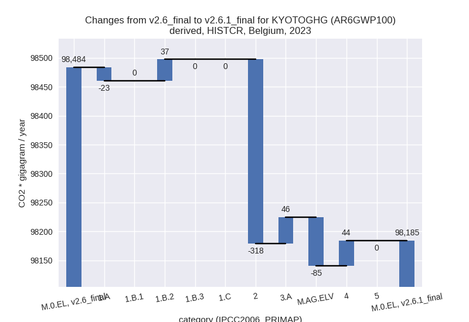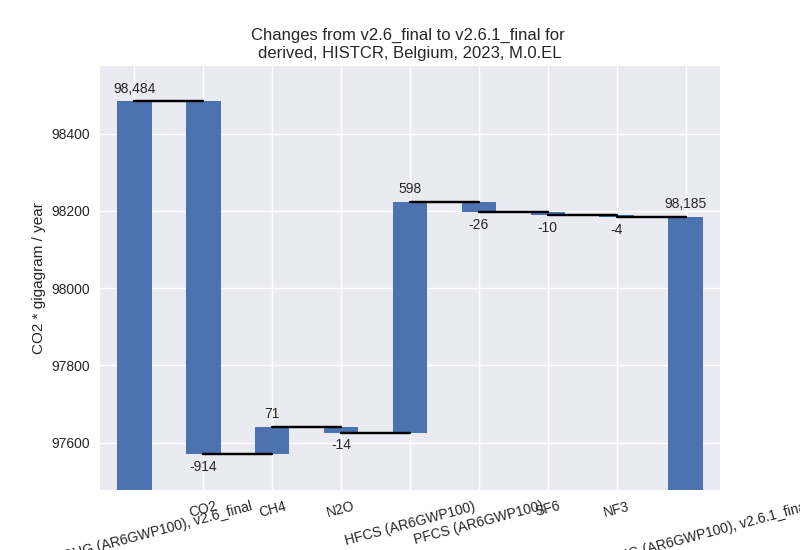
1990-2023
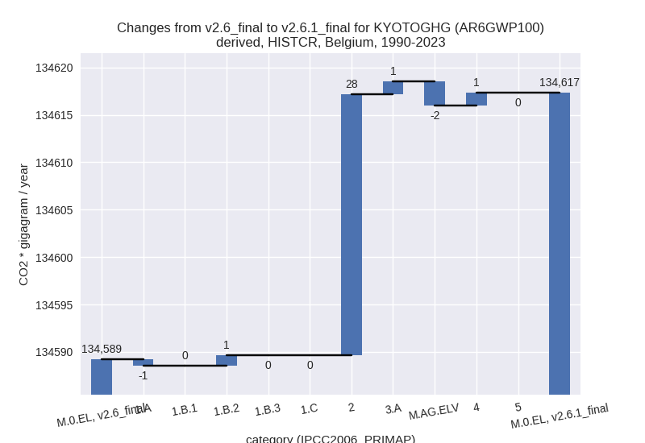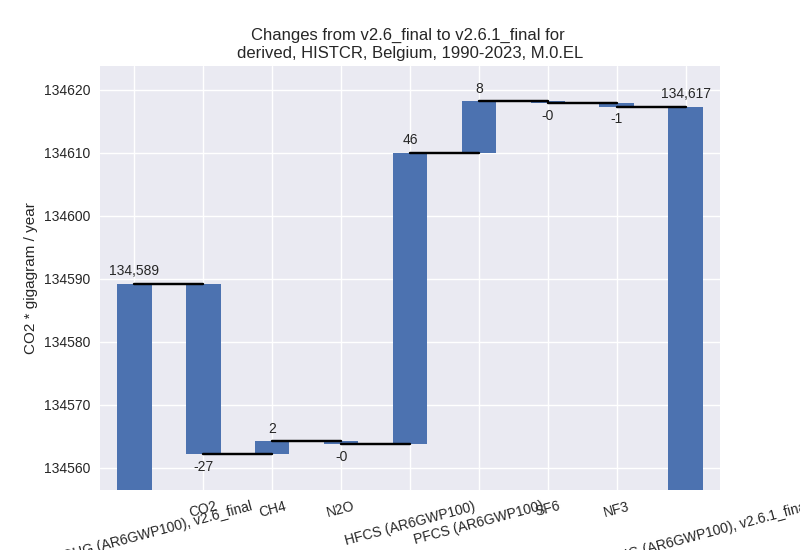
third party scenario
2023
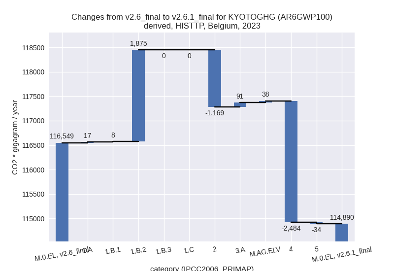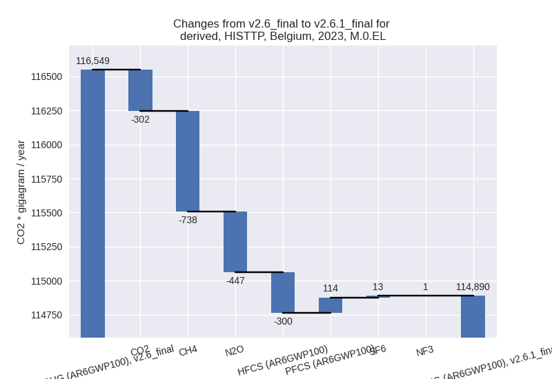
1990-2023
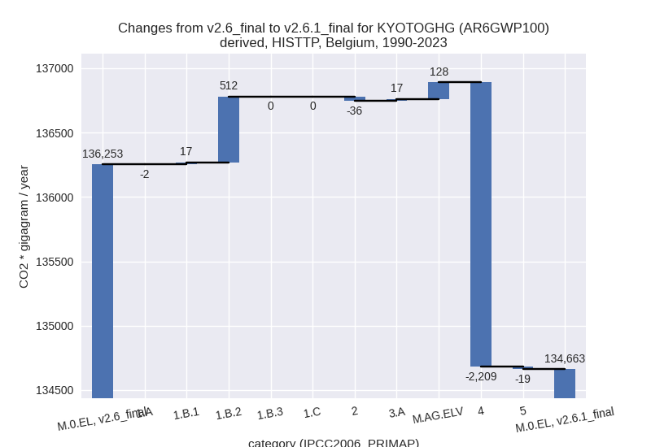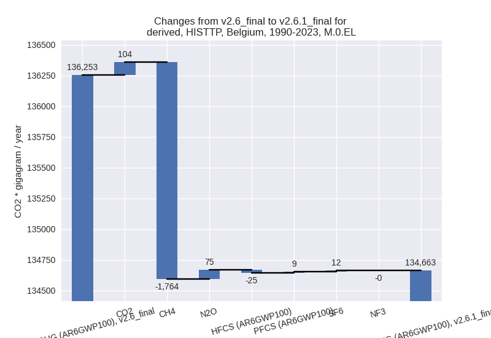
Detailed changes for the
scenarios:
country reported scenario
(HISTCR):
Most important changes
per time frame
For 2023 the following sector-gas combinations have
the highest absolute impact on national total KyotoGHG (AR6GWP100)
emissions in 2023 (top 5):
- 1: 2, CO2 with -893.92 Gg CO2 / year (-6.6%)
- 2: 2, HFCS (AR6GWP100) with 597.70 Gg CO2 / year (33.2%)
- 3: 4, CH4 with 58.30 Gg CO2 / year (7.8%)
- 4: 1.A, CH4 with -52.50 Gg CO2 / year (-8.8%)
- 5: M.AG.ELV, N2O with -52.23 Gg CO2 / year (-1.8%)
For 1990-2023 the following sector-gas combinations
have the highest absolute impact on national total KyotoGHG (AR6GWP100)
emissions in 1990-2023 (top 5):
- 1: 2, HFCS (AR6GWP100) with 46.20 Gg CO2 / year (1.9%)
- 2: 2, CO2 with -26.48 Gg CO2 / year (-0.1%)
- 3: 2, PFCS (AR6GWP100) with 8.14 Gg CO2 / year (1.1%)
- 4: 4, CH4 with 1.71 Gg CO2 / year (0.1%)
- 5: 1.A, CH4 with -1.54 Gg CO2 / year (-0.3%)
Changes in the main sectors for aggregate KyotoGHG (AR6GWP100)
are
- 1: Total sectoral emissions in 2022 are 76400.23 Gg
CO2 / year which is 73.4% of M.0.EL emissions. 2023 Emissions have
changed by 0.0% (13.71 Gg CO2 /
year). 1990-2023 Emissions have changed by 0.0% (0.40 Gg CO2 / year).
- 2: Total sectoral emissions in 2022 are 17302.73 Gg
CO2 / year which is 16.6% of M.0.EL emissions. 2023 Emissions have
changed by -2.0% (-318.35 Gg CO2 /
year). 1990-2023 Emissions have changed by 0.1% (27.54 Gg CO2 / year).
- M.AG: Total sectoral emissions in 2022 are 9227.27
Gg CO2 / year which is 8.9% of M.0.EL emissions. 2023 Emissions have
changed by -0.4% (-38.65 Gg CO2 /
year). 1990-2023 Emissions have changed by -0.0% (-1.14 Gg CO2 / year).
- 4: Total sectoral emissions in 2022 are 1176.79 Gg
CO2 / year which is 1.1% of M.0.EL emissions. 2023 Emissions have
changed by 4.0% (44.15 Gg CO2 /
year). 1990-2023 Emissions have changed by 0.0% (1.30 Gg CO2 / year). For 2023 the
changes per gas
are:
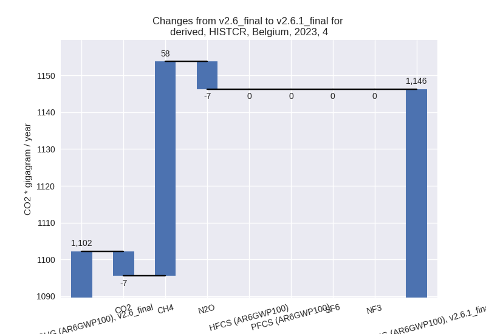
- 5: No data
third party scenario (HISTTP):
Most important changes
per time frame
For 2023 the following sector-gas combinations have
the highest absolute impact on national total KyotoGHG (AR6GWP100)
emissions in 2023 (top 5):
- 1: 4, CH4 with -2483.33 Gg CO2 / year (-52.3%)
- 2: 1.B.2, CH4 with 1638.77 Gg CO2 / year (219.9%)
- 3: 2, CO2 with -534.15 Gg CO2 / year (-6.9%)
- 4: 2, N2O with -456.91 Gg CO2 / year (-9.4%)
- 5: 2, HFCS (AR6GWP100) with -299.98 Gg CO2 / year (-11.8%)
For 1990-2023 the following sector-gas combinations
have the highest absolute impact on national total KyotoGHG (AR6GWP100)
emissions in 1990-2023 (top 5):
- 1: 4, CH4 with -2209.25 Gg CO2 / year (-40.0%)
- 2: 1.B.2, CH4 with 413.34 Gg CO2 / year (28.5%)
- 3: 1.B.2, CO2 with 99.13 Gg CO2 / year (373064.0%)
- 4: M.AG.ELV, N2O with 98.26 Gg CO2 / year (3.9%)
- 5: M.AG.ELV, CO2 with 29.40 Gg CO2 / year (267.1%)
Changes in the main sectors for aggregate KyotoGHG (AR6GWP100)
are
- 1: Total sectoral emissions in 2022 are 93700.53 Gg
CO2 / year which is 77.3% of M.0.EL emissions. 2023 Emissions have
changed by 2.2% (1900.31 Gg CO2 /
year). 1990-2023 Emissions have changed by 0.5% (527.97 Gg CO2 / year). For 2023 the
changes per gas
are:
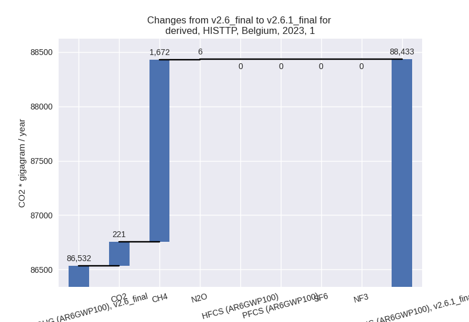
The changes come from the following subsectors:
- 1.A: Total sectoral emissions in 2022 are 90909.82
Gg CO2 / year which is 97.0% of category 1 emissions. 2023 Emissions
have changed by 0.0% (16.99 Gg CO2 /
year). 1990-2023 Emissions have changed by -0.0% (-1.94 Gg CO2 / year).
- 1.B.1: Total sectoral emissions in 2022 are 203.56
Gg CO2 / year which is 0.2% of category 1 emissions. 2023 Emissions have
changed by 4.4% (8.08 Gg CO2 /
year). 1990-2023 Emissions have changed by 4.1% (17.44 Gg CO2 / year). For 2023 the
changes per gas
are:
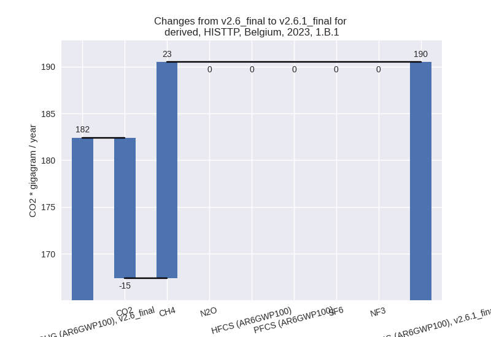
For 1990-2023 the changes per gas
are:
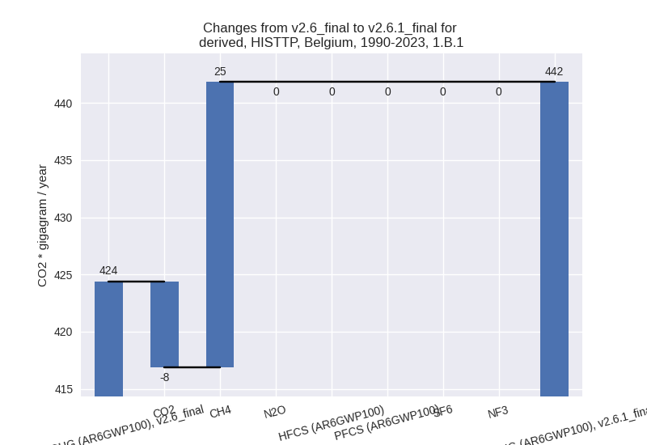
There is no subsector information available in PRIMAP-hist.
- 1.B.2: Total sectoral emissions in 2022 are 2587.14
Gg CO2 / year which is 2.8% of category 1 emissions. 2023 Emissions have
changed by 251.6% (1875.24 Gg CO2 /
year). 1990-2023 Emissions have changed by 35.4% (512.47 Gg CO2 / year). For 2023 the
changes per gas
are:
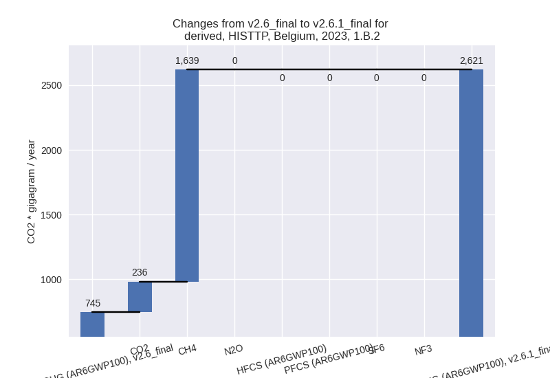
For 1990-2023 the changes per gas
are:
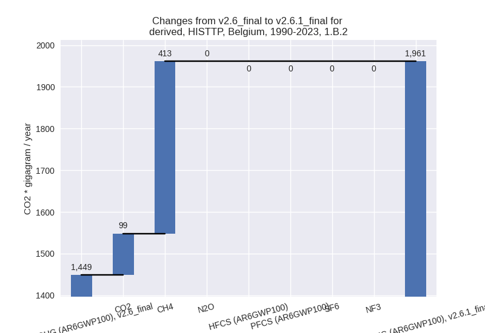
There is no subsector information available in PRIMAP-hist.
- 2: Total sectoral emissions in 2022 are 15158.02 Gg
CO2 / year which is 12.5% of M.0.EL emissions. 2023 Emissions have
changed by -7.6% (-1169.02 Gg CO2 /
year). 1990-2023 Emissions have changed by -0.2% (-35.85 Gg CO2 / year). For 2023 the
changes per gas
are:
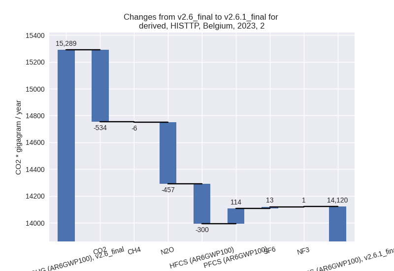
- M.AG: Total sectoral emissions in 2022 are 9584.01
Gg CO2 / year which is 7.9% of M.0.EL emissions. 2023 Emissions have
changed by 1.4% (128.10 Gg CO2 /
year). 1990-2023 Emissions have changed by 1.4% (144.58 Gg CO2 / year).
- 4: Total sectoral emissions in 2022 are 2628.36 Gg
CO2 / year which is 2.2% of M.0.EL emissions. 2023 Emissions have
changed by -49.1% (-2483.95 Gg CO2 /
year). 1990-2023 Emissions have changed by -38.0% (-2208.75 Gg CO2 / year). For 2023
the changes per gas
are:
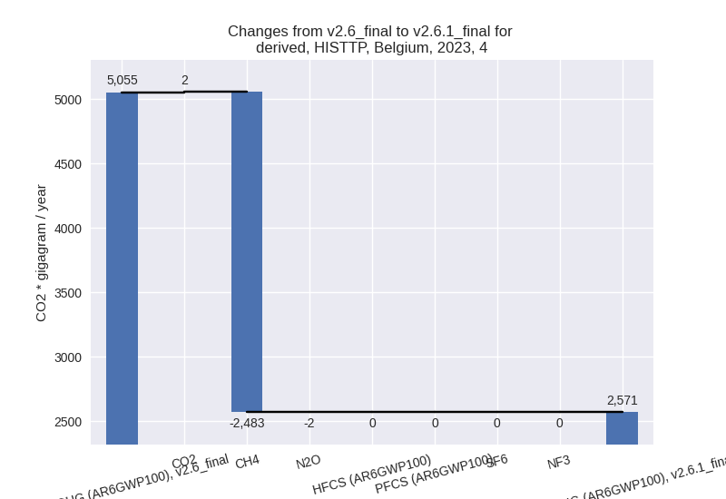
For 1990-2023 the changes per gas
are:
- 5: Total sectoral emissions in 2022 are 194.77 Gg
CO2 / year which is 0.2% of M.0.EL emissions. 2023 Emissions have
changed by -16.1% (-34.35 Gg CO2 /
year). 1990-2023 Emissions have changed by -4.9% (-18.55 Gg CO2 / year). For 2023 the
changes per gas
are:
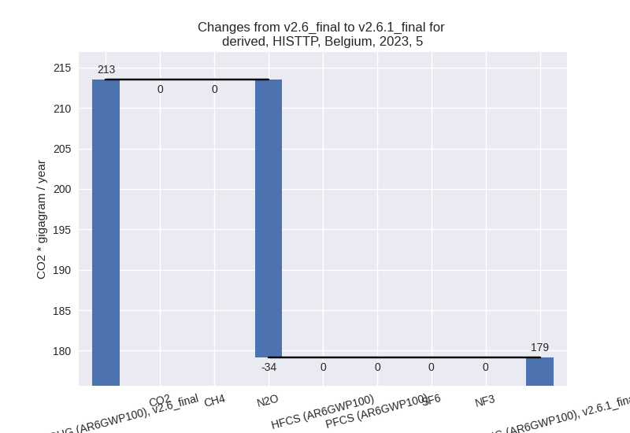
For 1990-2023 the changes per gas
are: